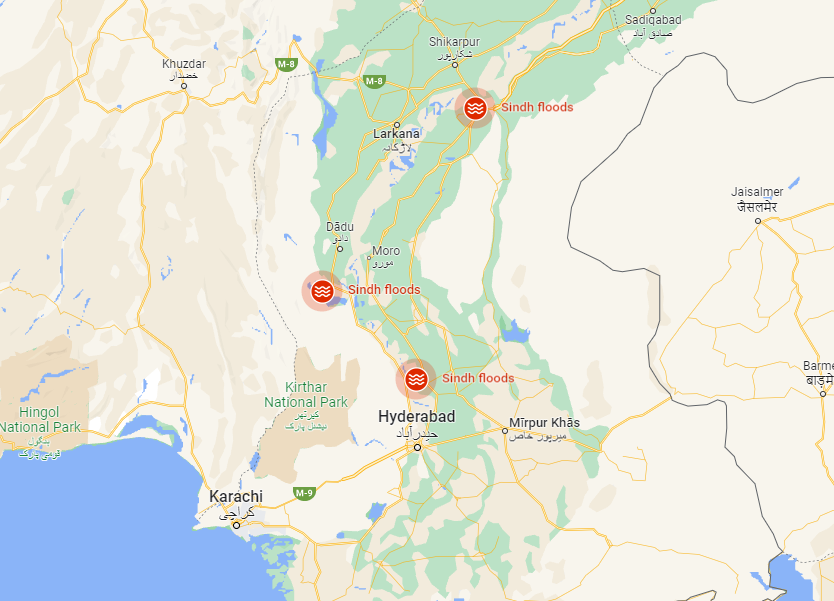

Sindh
Floods in Sindh killed 701 people and injured 8,422. Among the 293 children killed were three who died when the roof
of their house collapsed in Kandhkot. 10 million people have been displaced in Sindh and 57,496 houses were severely
damaged or completely destroyed, mostly in the Hyderabad Division, and 830 cattle were killed. 6,200 km2
(1,540,000 acres) of farmland have been swept away by the floods.
An arial view of Shahdadkot city covered with floods water in September 2022.
The Larkana and Sukkur divisions have also been severely affected by the floods; Thari Mirwah and K.N.Shah has been
'inundated'. The floods have turned the Indus River into a lake 100 km (62 mi) wide.
In Jacobabad which has been called the world's hottest city, more than 40,000 people are living in temporary
shelters with limited access to food, with 19 dead from the flooding as of 31 August.
During the floods, Lake Manchar overflowed, and in September 2022 efforts were made to assist its drainage.
In the Dadu District floodwater submerged 300 villages.
The Sindh provincial government confirmed on 16 September 2022 588 cases of malaria, with a further 10,604 suspected
cases, as well as 17,977 cases of diarrhea, and 20,064 of skin disease. Since 1 July, a total of 2,300,000 patients
have been treated for malaria in field and mobile hospitals. A high of 90,000 cases of diarrhea were reported in a
single day on 1 September.
